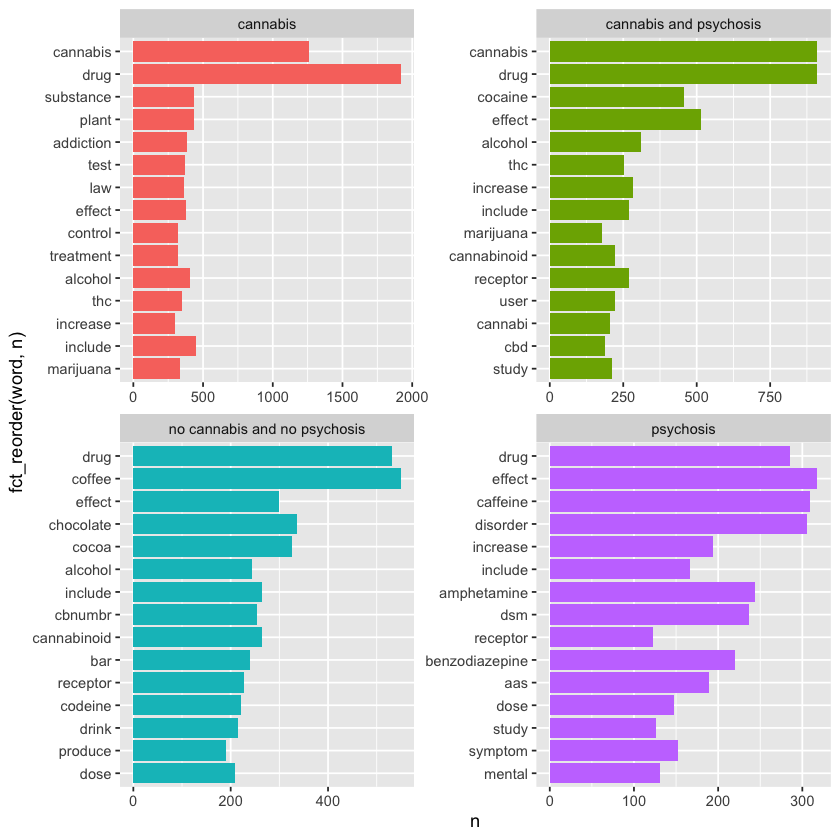

In order to do machine learning with our data, we need to develop a thorough understanding of the data and the relationships between the variables. We will do Exploratory Data Analysis (EDA) to understand the data and to prepare for modeling.
Text Data
To begin, we can explore the textual data gathered that relates to psychosis and cannabis. This text data will be essential for answering questions regarding public sentiment related to the impact of cannabis on psychosis and/or schizophrenia.
We’ll start by cleaning up the text data in order to make visualizations and analyze the data.
Rows: 397 Columns: 2
-- Column specification --------------------------------------------------------
Delimiter: ","
chr (2): link, text
i Use `spec()` to retrieve the full column specification for this data.
i Specify the column types or set `show_col_types = FALSE` to quiet this message.
Rows: 30000 Columns: 2
-- Column specification --------------------------------------------------------
Delimiter: ","
chr (2): label, text
i Use `spec()` to retrieve the full column specification for this data.
i Specify the column types or set `show_col_types = FALSE` to quiet this message.
This wordcloud indicates that the Wikipedia text refers to cannabis as a drug, emphasizing medical language and medical effects of the substance. There does not appear to be any mention of psychosis or schizophrenia in the text, indicating that it is not a common topic of discussion on the Wikipedia pages relevant to cannabis usage.
Code
tidy_wiki %>%filter(stringi::stri_enc_isascii(word)) %>%group_by(label) %>%mutate(m = n /sum(n)) %>%arrange(-m) %>%slice_head(n =50) %>%ggplot(aes(label = word, size = m, color = label)) +geom_text_wordcloud_area(rm_outside =TRUE) +scale_size_area(max_size =20) +theme_minimal() +facet_wrap(~label)
Here, we visualize the text based on whether it mentions cannabis, psychosis, neither, or both. We notice that texts mentioning psychosis tend to have language that relates more to addiction and science as it relates to cannabis. This indicates that conversations around mental health and cannabis tend to be more scientific in nature.
We see here that the average word length is very similar across all found categories. However, it tends to be slightly higher when psychosis is mentioned. This may indicate a more scientific discussion, as scientific terms tend to be longer than average, but this is somewhat speculative.
Code
wiki_data %>%distinct() %>%filter(!is.na(text)) %>%mutate(sentence_length = stringr::str_count(text, "\\S+")) %>%group_by(label) %>%summarize(mean =mean(sentence_length), median =median(sentence_length), n =n())
A tibble: 4 x 4
label
mean
median
n
<chr>
<dbl>
<dbl>
<int>
cannabis
783.2434
266.5
152
cannabis and psychosis
2391.0417
2006.5
24
no cannabis and no psychosis
388.6061
69.0
198
psychosis
2205.4706
1381.0
17
Texts that mentions psychosis are significantly longer in word count that texts that do not mention psychosis. This suggests that these conversations may be much more nuanced and detailed than conversations that do not mention psychosis. Another factor may be that we have less texts that mention psychosis than those that do not, so the average word count may be skewed.
Code
tidy_wiki %>%group_by(label) %>%summarise(n =n())
A tibble: 4 x 2
label
n
<chr>
<int>
cannabis
12902
cannabis and psychosis
7673
no cannabis and no psychosis
10812
psychosis
6183
This table shows overall word counts by category. This is not very useful since the categories are not evenly distributed.
`stat_bin()` using `bins = 30`. Pick better value with `binwidth`.
As expected, words with low frequency are much more common across all 4 categories than words with high frequency. This follows Zipf’s law. Texts that mention psychosis appear to have slightly more repeated language than texts that do not mention psychosis.
Again, we see a very clear display of Zipf’s law, indicating the inverse nature between term frequency and rank. This means that the most common words are much more common than the least common words. We see here that this remains true across all categories in our data.
Code
tidy_wiki %>%group_by(label) %>%slice_max(n, n =15) %>%ungroup() %>%ggplot(aes(n, fct_reorder(word, n), fill = label)) +geom_col(show.legend =FALSE) +facet_wrap(~label, ncol =2, scales ="free")

When looking at the top most frequent terms for each category of Wikipedia article, we see that texts that mention cannabis and psychosis focus on the effects of cannabis and THC specificallly. It is also notable that texts which only mention psychosis also mention drugs, indicating the high prevalence of drug use in individuals with psychosis. Texts that mention only cannabis include “law” as a top word, indicting discussions about the legality of cannabis usage.
Code
tidy_wiki %>%select(word, word_count) %>%distinct() %>%filter(word_count >=600) %>%ggplot() +geom_bar(aes(y =fct_reorder(word, word_count), x = word_count), stat ="identity")
Overall, we see the theme of “effect”, indicating that the text is focused on identifying the impact of cannabis usage. This indicates that these texts will be helpful in identifying public sentiment around the impact of cannabis on psychosis and schizophrenia, as texts are focused on the impact of cannabis usage.
Immediately, we can sense a difference in tone between Wikipedia data and Reddit data. These texts are much more casual and anecdotal, rather than clinical and scientific. This indicates that Reddit data will be helpful in identifying public sentiment around the impact of cannabis on psychosis and schizophrenia, as the word “feel” is one of the most commonly used.
Code
ggplot( tidy_reddit %>%filter(stringi::stri_enc_isascii(word)) %>%filter(n >=2),aes(label = word, size = n, color = label )) +geom_text_wordcloud_area(rm_outside =TRUE) +scale_size_area(max_size =20) +theme_minimal() +facet_wrap(~label)
Warning message in wordcloud_boxes(data_points = points_valid_first, boxes = boxes, :
"Some words could not fit on page. They have been removed."
Here we see the breakdown of the most common words across the subreddits. It is clear that the “r/weed” subreddit consists largely of stories about being high. The “r/schizophrenia” and “r/Psychosis” subreddits include stories of delusions and express emotions. It will be interesting to understand the overlap between these three subreddits.
Code
tidy_reddit %>%mutate(nchar =nchar(word)) %>%group_by(label) %>%summarize(mean =mean(nchar), median =median(nchar))
A tibble: 3 x 3
label
mean
median
<chr>
<dbl>
<dbl>
Psychosis
6.411458
6
schizophrenia
6.291242
6
weed
5.555046
5
The average word count is highest for “r/Psychosis”, followed by “r/schizophrenia”, and then “r/weed”. This indicates that the texts in “r/Psychosis” are more detailed than those in “r/weed”. This seems to indicate that individuals are telling detailed stories about their experiences with psychosis and schizophrenia on the “r/Psychosis” and “r/schizophrenia” subreddits.
This analysis confirms that individuals are writing many more words in “r/Psychosis” than in the other two subreddits. It is interesting that “r/Psychosis” has a much higher word count than “r/schizophrenia”, even though I would expect them to be similar. We also see that the means are all significantly higher than the medians, indicating that there are a few outliers of very long text in the data.
We see here that the total number of words used across all the texts is almost twice as high in “r/Psychosis”. This again points to the fact that people are writing more on “r/Psychosis” than on the other two subreddits, so they are using a more diverse subset of words.
Code
tidy_reddit %>%filter(stringi::stri_enc_isascii(word)) %>%group_by(label) %>%arrange(-n) %>%slice_head(n =10) %>%ggplot(aes(x = n, y = word, fill = label)) +geom_bar(stat ="identity") +theme_minimal() +facet_wrap(~label, scales ="free_y")
From this visual of the top words in each subreddit, we see that “r/Psychosis” tends to focus on feelings and tell stories of experiences with psychosis. “r/schizophrenia” tends to focus on symptoms and experiences with medication. “r/weed” tends to focus on the experience of being high and partaking in cannabis usage.
`stat_bin()` using `bins = 30`. Pick better value with `binwidth`.
Here we see again that the most common words are much more common than the least common words, indicating Zipf’s law. We also see that the texts in “r/Psychosis” have more repeated language than the other two subreddits, probably due to the fact that people are writing more in “r/Psychosis”.
Once again, we see that for each subreddit, the most common words are much more common than the least common words.
Now that we have a better understanding of the text data, we can begin to explore our numerical data.
Record Data
In order to understand our numerical data, we will analyze relationships through numerical summaries and visualizations. We will also look at correlation between variables in our data in order to understand the relationships between variables and remove highly correlated variables from our data.
Rows: 549 Columns: 24
-- Column specification --------------------------------------------------------
Delimiter: ","
dbl (24): Code, Program, sex, age, age_psychosis, famhis, hospita, dui, dup,...
i Use `spec()` to retrieve the full column specification for this data.
i Specify the column types or set `show_col_types = FALSE` to quiet this message.
Rows: 477 Columns: 23
-- Column specification --------------------------------------------------------
Delimiter: ","
dbl (23): code, Program, sex, age, agepsychosis, fampsic, hospita, dui, dup,...
i Use `spec()` to retrieve the full column specification for this data.
i Specify the column types or set `show_col_types = FALSE` to quiet this message.
Now that we have the s1 and s2 files, let’s figure out how to join them. Using setdiff below, we see that s2 has a few columns not in s1.
We perform a left_join of the two datasets since s2 is a subset of s1 with additional columns. We can see that the s2 columns are added to the s1 columns in our new joined dataset.
full_data %>%ggplot() +geom_bar(aes(x = diagnosis, fill = diagnosis)) +theme_minimal()
Here we see that the data is well distributed between individuals with a diagnosis of schizophrenia and those without. This is important because we want to make sure that our data is not skewed towards one group or the other. Evenly distributed data will help us build better models and make better predictions.
Code
full_data %>%ggplot() +geom_bar(aes(x = diagnosis, fill = sex))
Our data is fairly evenly distributed between genders. The patients without schizophrenia are slightly skewed male.
Code
full_data %>%ggplot() +geom_bar(aes(x = diagnosis, fill = CannabisBinary))
In this plot, it is clear that the spread of individuals using cannabis is even across both groups. This will help us make clear predictions and gain a better understanding of the impact of cannabis on diagnosis by having all groups evenly represented.
Code
library(corrplot)full_data %>%select(-cds0) %>%select(where(is.numeric)) %>%# fill in all missing values with the meanmutate(across(where(is.numeric), ~ifelse(is.na(.x), mean(.x, na.rm =TRUE), .x))) %>%# normalize all numeric variablesmutate(across(where(is.numeric), ~ (.x -min(.x)) / (max(.x) -min(.x)))) %>%cor() %>%corrplot.mixed(order ='AOE', upper ='circle', tl.col ='black')
Through a correlation plot of all numeric variables, we see that very few variables are correlated. This is great because it means that our features are relatively independent of each other, which will help us build better models.
There are two sets of highly correlated features: Negativedimen0 and SANS0; and age_psychosis and age. The two age variables are obviously clearly correlated because the data was collected shortly after the onset of pychosis, so we will remove age. We also remove SANS0 due to low interpretability.
Next, we visualize the correlation between all the categorical variables as numeric variables. We see that most of the features are not highly correlated. Program and code are correlated, but we will remove both of these variables before modeling as they are both ID variables rather than features.
Next, we will look at a full numeric summary of all variables. This tells us the mean, median, and quartiles of each numeric variable as well as the distribution of factor variables. it is notable that most of the factor variables are fairly evenly distributed, which is good for modeling. Some numeric variables are highly skewed, such as dup, dui, and family_history. We will normalize the data to lessen the impact of these outliers. These are not significant enough to remove from the data.
Code
full_data %>%summary()
code Program sex age_psychosis family_history hospita
1 : 1 1:174 0:311 Min. :14.81 1 :127 1 :379
2 : 1 2: 20 1:238 1st Qu.:21.65 2 :420 2 :169
3 : 1 3:203 Median :26.92 NA's: 2 NA's: 1
4 : 1 4:152 Mean :28.92
5 : 1 3rd Qu.:34.25
6 : 1 Max. :59.80
(Other):543
dui dup levelsocioeco urbanarea livingwithparents
Min. : 0.10 Min. : 0.06 1 :282 1 :386 1 :273
1st Qu.: 2.00 1st Qu.: 1.00 2 :249 2 :154 2 :270
Median : 10.00 Median : 3.00 NA's: 18 NA's: 9 NA's: 6
Mean : 21.88 Mean : 12.51
3rd Qu.: 24.00 3rd Qu.: 12.00
Max. :288.00 Max. :240.00
unmarried unemployed years_edu CannabisBinary SAPS0
1 :397 1 :235 Min. : 6.00 0:236 Min. : 1.00
2 :147 2 :308 1st Qu.: 8.00 1:313 1st Qu.:10.00
NA's: 5 NA's: 6 Median :10.00 Median :14.00
Mean :10.13 Mean :13.76
3rd Qu.:12.00 3rd Qu.:17.00
Max. :17.00 Max. :25.00
Psychoticdim0 Disorganizeddim0 Negativedimen0 dasgl0 diagnosis
Min. : 0.000 Min. : 0.000 Min. : 0.000 Min. :0.000 0:278
1st Qu.: 5.000 1st Qu.: 4.000 1st Qu.: 0.000 1st Qu.:0.000 1:271
Median : 7.000 Median : 5.000 Median : 2.000 Median :1.000
Mean : 7.405 Mean : 6.358 Mean : 4.785 Mean :1.412
3rd Qu.:10.000 3rd Qu.: 9.000 3rd Qu.: 8.000 3rd Qu.:3.000
Max. :10.000 Max. :15.000 Max. :20.000 Max. :5.000
insight cds0
Min. :1.000 Min. : NA
1st Qu.:1.000 1st Qu.: NA
Median :2.000 Median : NA
Mean :1.568 Mean :NaN
3rd Qu.:2.000 3rd Qu.: NA
Max. :2.000 Max. : NA
NA's :549
Code
full_data %>%ggplot(aes(x = age_psychosis, y = years_edu, color = CannabisBinary)) +geom_jitter(alpha =0.8) +facet_wrap(~CannabisBinary) +geom_smooth()
`geom_smooth()` using method = 'loess' and formula = 'y ~ x'
Here we attempt to see if there is any relationship between the age of psychosis, the number of years of education, and cannabis use. There does not appear to be any relationship between these variables, indicating that cannabis use is not strongly predicted by age of psychosis or years of education.
Code
full_data %>%ggplot(aes(x = age_psychosis, y = dui, color = diagnosis)) +geom_jitter(alpha =0.8) +facet_wrap(~diagnosis) +geom_smooth()
`geom_smooth()` using method = 'loess' and formula = 'y ~ x'
Here we examine the relationship between the age of psychosis, DUI, and diagnosis. Interestingly, we see that individuals with no schizophrenia diagnosis are more likely to have a DUI than individuals with a schizophrenia diagnosis. This is surprising, as we would expect individuals with schizophrenia to be more likely to have a DUI. This may be due to the fact that individuals with schizophrenia are less likely to drive.
Code
full_data %>%ggplot(aes(x = age_psychosis, y = dui, color = CannabisBinary)) +geom_jitter(alpha =0.8) +facet_wrap(~CannabisBinary)
Next, we examine the relationship between the age of psychosis, DUI, and cannabis use. We see that individuals with a DUI are more likely to use cannabis than individuals without a DUI. This is not surprising, as we would expect individuals who use cannabis to be more likely to use other substances as well, or they may have received a DUI for driving under the influence of cannabis.
Code
full_data %>%ggplot() +geom_boxplot(aes(x = diagnosis, y = age_psychosis, fill = diagnosis))
Here we examine the age of pychosis onset and the diagnosis. It appears that individuals with a schizophrenia diagnosis tend to have a slightly earlier age of psychosis onset than individuals without a schizophrenia diagnosis. This is not surprising, as schizophrenia tends to be diagnosed in early adulthood.
Code
full_data %>%ggplot() +geom_boxplot(aes(x = CannabisBinary, y = age_psychosis, fill = CannabisBinary))
Here we see that cannabis users tend to have a significantly earlier age of psychosis onset than non-cannabis users. This is some of the most interesting evidence in support of my research, as it indicates that cannabis use may be related to the onset of psychosis.
Once more, we see that cannabis usage is linked to an earlier age of psychosis onset. This is strong evidence in support of my research, and it indicates that cannabis usage may be related to the onset of psychosis.
Warning message in geom_bar(aes(x = levelsocioeco, fill = CannabisBinary), bins = 20):
"Ignoring unknown parameters: `bins`"
This visual shows that there is not a strong relationship between socio economic status and cannabis usage. This is not surprising, as cannabis usage is common both among the wealthy and the poor.
Code
full_data %>%group_by(CannabisBinary, diagnosis) %>%summarize(n =n()) %>%ungroup() %>%group_by(CannabisBinary) %>%mutate(diagnosis_gvn_cannabis = n /sum(n)) %>%ungroup() %>%group_by(diagnosis) %>%mutate(cannabis_gvn_diagnosis = n /sum(n)) %>%ungroup()
`summarise()` has grouped output by 'CannabisBinary'. You can override using
the `.groups` argument.
A tibble: 4 x 5
CannabisBinary
diagnosis
n
diagnosis_gvn_cannabis
cannabis_gvn_diagnosis
<fct>
<fct>
<int>
<dbl>
<dbl>
0
0
119
0.5042373
0.4280576
0
1
117
0.4957627
0.4317343
1
0
159
0.5079872
0.5719424
1
1
154
0.4920128
0.5682657
In this table, we see that there are about even numbers of individuals with schizophrenia who use cannabis, individuals with schizophrenia who do not use cannabis, other cannabis users, and individuals who do not use cannabis in the data. All four groups have experienced psychosis, so we can use this data to understand the impact of cannabis on psychosis. Here we see that probabilistically, the chance of using cannabis given a schizophrenia diagnosis is about 0.57, while the chance of having a schizophrenia diagnosis given cannabis usage is about 0.49. Neither of these probabilities indicate a very strong relationship between cannabis usage and schizophrenia diagnosis.
In my data exploration, I utilized the tidyverse, tidytext, ggplot2 to understand my data. These tools developed by Posit have very thorough documentation and similar APIs, making them quick to learn, user friendly, and customizable. ggplot2 follows the grammar of graphics, making plots easy to build and modify based on the requirements.
For the text data, I analyzed the word counts, word length, and word frequency across different categorizations. For the Reddit data, I used subreddit title as the label. For the Wikipedia pages, I categorized them based on whether they mentioned cannabis, psychosis, both, or neither. I was able to understand the themes of each different category as well as tone through the analysis.
For the record data, I used dplyr to join the two datasets and ggplot2 to visualize the data. It was clear that a relationship between age of psychosis onset and cannabis usage exists, but the relationship between cannabis usage and diagnosis was less clear. It would be interesting to explore a wider dataset with more individuals, including individuals who have not experienced psychosis, to see if the relationship between cannabis usage and diagnosis is more clear.
My hypothesis was that cannabis usage is related to the onset of psychosis. My analysis of the record data supports this hypothesis, as I found that cannabis users tend to have an earlier age of psychosis onset than non-cannabis users. This is strong evidence in support of my research, and it indicates that cannabis usage may be related to the onset of psychosis. I am still interested in the sentiment of the public around the impact of cannabis on psychosis and schizophrenia, so I will continue to explore the text data to understand this.